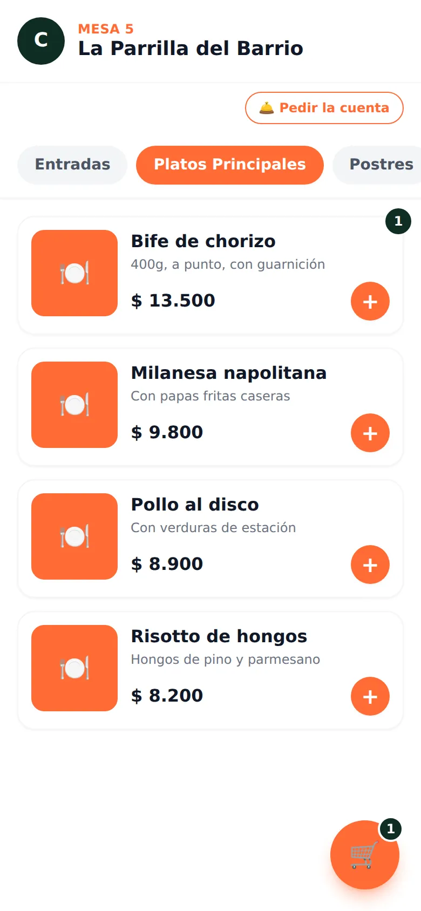

Para el cliente
Pide desde la mesa, sin instalar nada.
Escanea el código de su mesa, ve el menú actualizado y arma su pedido desde el navegador de su propio celular. Sin apps, sin esperar al mozo para pedir.
- Menú siempre actualizado, sin reimprimir cartas
- Pedido directo a cocina, sin intermediarios
- Puede pedir la cuenta desde la mesa